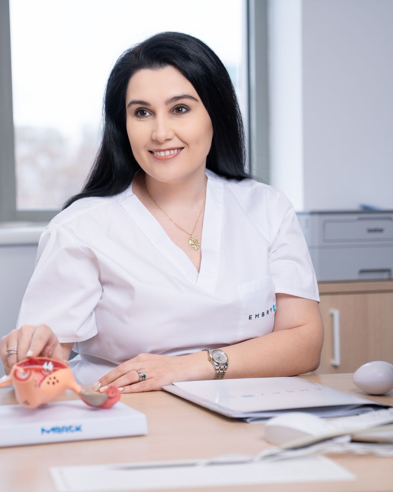

Consult de infertilitate
Investigarea completă a cauzelor infertilității: rezervă ovariană, factori uterini și hormonali, evaluare completă a cuplului.
Obstetrică-Ginecologie · Medicină Reproductivă · București & Buzău
Medic specialist obstetrică-ginecologie la Clinica Embryos București. Consult ginecologic, monitorizarea sarcinii și consult de infertilitate – cu explicații clare, la fiecare pas.

Servicii medicale
De la controlul ginecologic anual până la evaluarea completă a fertilității, fiecare consultație include timp real de discuție și un plan personalizat.
Investigarea completă a cauzelor infertilității: rezervă ovariană, factori uterini și hormonali, evaluare completă a cuplului.
Evaluarea permeabilității tubare (HSG), una dintre cele mai frecvente cauze de infertilitate feminină.
Diagnosticul endometritei cronice, o cauză frecvent ignorată a eșecurilor de implantare și a pierderilor recurente de sarcină.
Explorarea și, când e nevoie, tratarea în aceeași ședință a polipilor, fibroamelor sau aderențelor uterine.
Ecografie transvaginală și abdominală, confirmarea sarcinii, urmărirea sarcinii trimestru cu trimestru, inclusiv sarcini obținute prin FIV.
Prevenția cancerului de col uterin: citologie, testare și genotipare HPV, consiliere privind vaccinarea anti-HPV.
Despre mine
Absolventă a Facultății de Medicină din cadrul UMF „Carol Davila" București (2014–2020), cu rezidențiat în obstetrică-ginecologie efectuat la Spitalul Clinic de Obstetrică-Ginecologie „Prof. Dr. Panait Sârbu" București (2021–2026). Din 2026, medic specialist în cadrul Clinicii de Fertilitate și Ginecologie Embryos București.
Cred într-o medicină în care pacienta înțelege fiecare pas: diagnosticul, opțiunile de tratament și motivele din spatele fiecărei recomandări.
Întrebări frecvente
Contact & programări
📍 Clinica Embryos – Str. Gheorghe Polizu 58-60, One Victoriei Center, București
☎ 021 9353
| Luni – Vineri | 08:00 – 20:00 |
| Sâmbătă | 08:00 – 12:00 |
| Duminică | Închis |
Programul consultațiilor Dr. Iovu poate diferi – confirmați telefonic.
📍 Oferim consultații și la Embryos Buzău (Str. Victoriei nr. 20, etaj 2). Detalii și programare →
Sună – primești confirmarea programării telefonic.
Luni – Vineri, 08:00 – 20:00 · Sâmbătă, 08:00 – 12:00